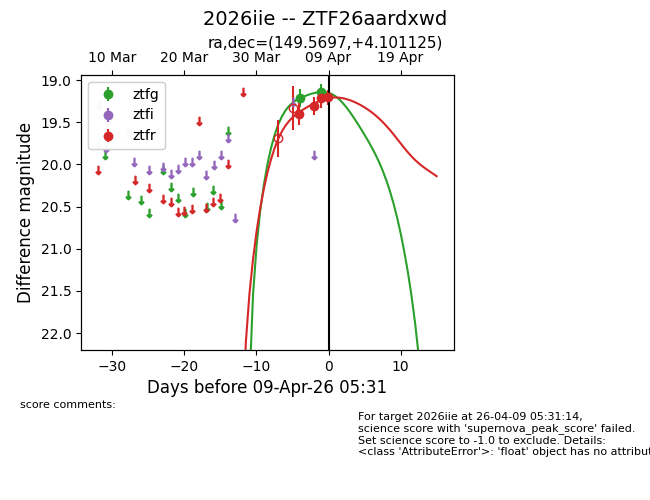
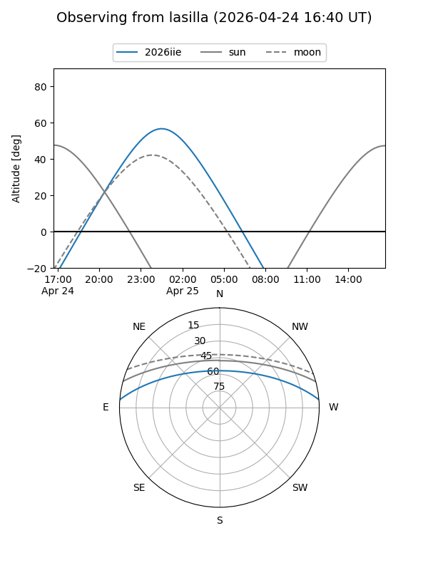
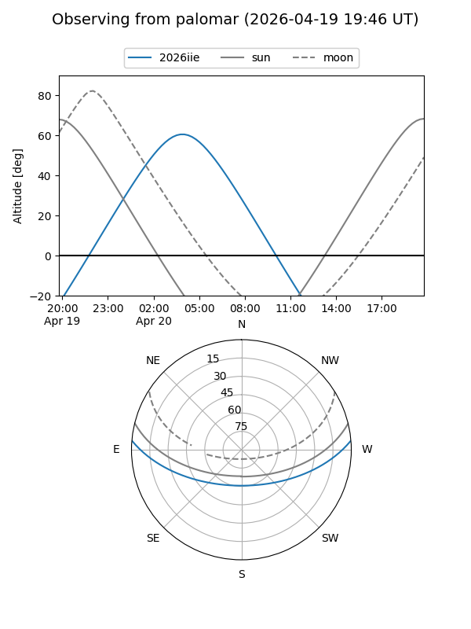
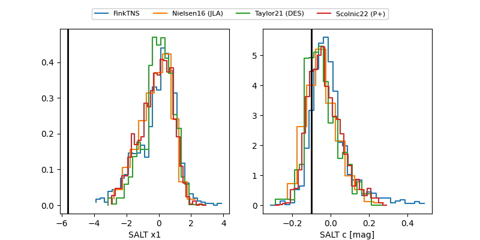

2026iie
Target 2026iie at 2026-04-09 05:38
Aliases and brokers:
FINK: link
Lasair: link
ALeRCE: link
TNS: link
YSE: link
alt names
ZTF26aardxwd (ztf,fink_ztf)
2026iie (tns,yse)
Coordinates:
equatorial (ra, dec) = 149.5697,+4.10113
equatorial (HMS+DMS) = 09:58:16.74,+04:06:04.05
galactic (l, b) = (234.2868,+42.74761)
Flags:
Photometry:
last ztfg=19.14, ztfr=19.21
2 ztfg, 4 ztfr detections
Lightcurve

Visibility


Additional plots
